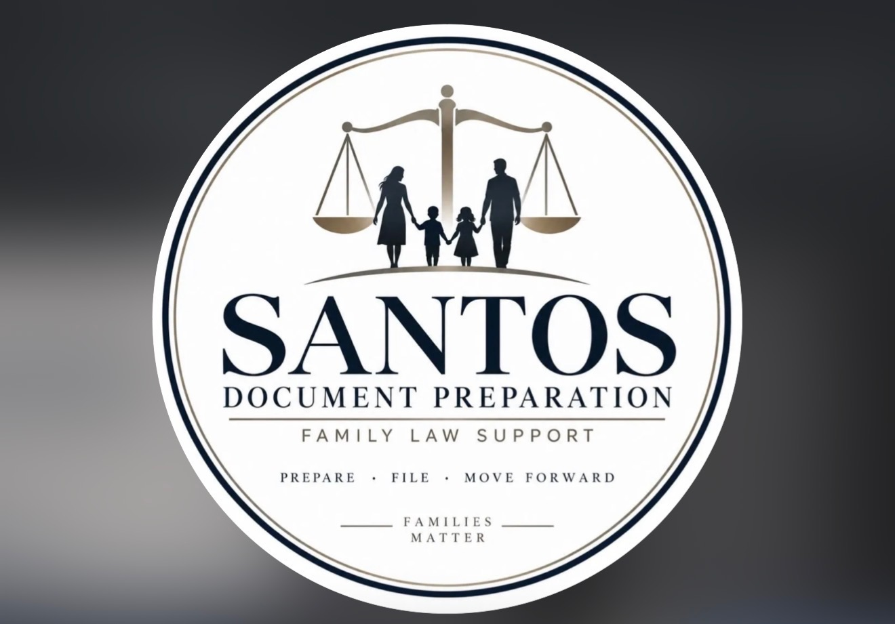

SANTOS DOCUMENT PREPARATIONProfessional, organized and family-focused document preparation for people handling family court matters. We help make the paperwork process easier to understand while keeping our role clear and transparent.
Request a Free 30-Minute ConsultationContact UsDocument preparation and filing support for custody-related family court paperwork.
Document preparation for cooperative or joint divorce matters where appropriate.
Preparation and organization of guardianship-related court documents.
Document preparation support for agreed matters, subject to applicable court and jurisdiction requirements.
Family court paperwork can feel overwhelming and expensive. Santos Document Preparation offers document preparation at a fraction of the cost commonly associated with hiring an attorney, for people whose needs fall within the document-preparation services we are permitted to provide.
Spanish-speaking assistance is available. We want clients to feel comfortable communicating with our team and understanding the document preparation process.
We serve Stanislaus County, California and Washoe and Lyon Counties, Nevada.
Tuesday–Friday: 9:00 AM–3:00 PM
Free consultations are 30 minutes, with a 30-minute buffer between appointments so each consultation receives focused attention.
Select weekend appointments may be available by request.
Pricing: Contact us for pricing based on the document preparation services requested.
Reviews are displayed anonymously and lightly excerpted for length. No private case information is shown.
“I love working with Araceli! She’s very prompt and explains the processes thoroughly. Anytime I have questions she answers them and makes me feel comfortable… I would definitely recommend reaching out to her for document preparation!”
— Anonymous Client“I cannot say enough wonderful things about Araceli. She responds incredibly quickly and is extremely thorough in everything she does. I’m beyond grateful for all of her hard work and dedication.”
— Anonymous Client“Thank you so much from the bottom of my heart for all the things big and small you do for me and my little family… You made the process very understandable and straightforward.”
— Anonymous Client“You made this whole transition with the court case smooth and understandable… We appreciate all the work you’ve done to help and support us through this whole process. Thank you so much for working with us!”
— Anonymous Client“After the first consultation with Araceli we felt relieved and knew what to expect. She explained everything with detail and always answered our calls, texts, questions and concerns.”
— Anonymous ClientConsultations are available by Zoom or phone. Regular appointment starts are offered Tuesday through Friday at 9:00 AM, 10:00 AM, 11:00 AM, 12:00 PM, 1:00 PM and 2:00 PM, leaving a 30-minute break between consultations.
Select weekend appointments may be available. Contact us if you need a weekend time.
Submitting this form requests an appointment; it does not confirm the time until Santos Document Preparation responds.